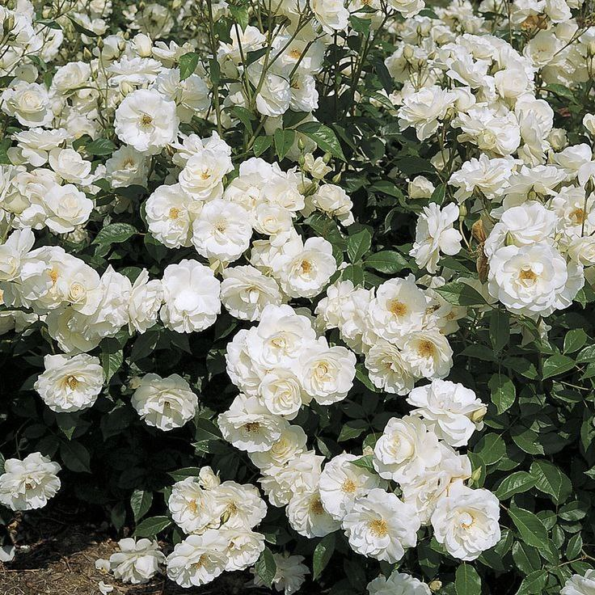
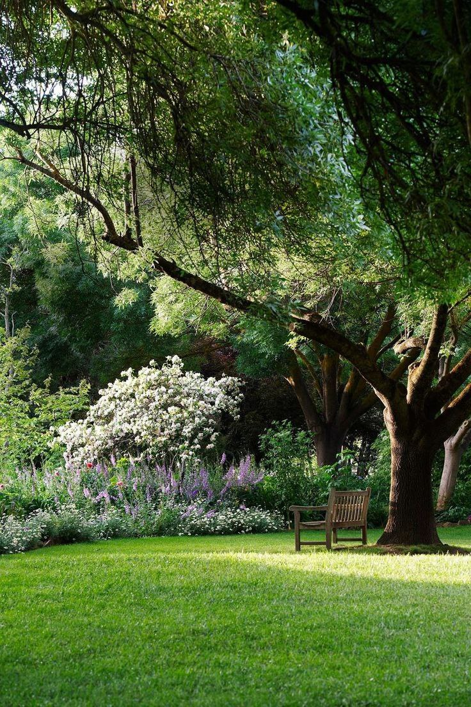

Plant Spacing Calculator – How Many Plants Do I Need? [Trees & Flowers]
How Many Plants Do I Need?
For productive gardening, it’s essential to determine the right number of plants to fill the provided area. Proper plant spacing allows plants to develop properly and prevents the invasion of weeds. It also allows for adequate aeration between plants to prevent the spread of diseases. Hence, to create an effective plant spacing chart to fill the provided area, you must first determine the ideal number of plants needed per square foot. A plant per square foot calculator can help you determine the correct number of plants required per area and square footage.
- For a square bed, multiply the length of the bed by its width to determine how many plants per square foot.
- For a circular planting bed, you can calculate how many plants per square foot is ideal by multiplying 3.14 by the distance from the center to the edge of the bed.
- For a triangular bed, multiply the height of the triangle by .5 times the base measurement.
Common Flower Spacing

Planting flowers in a cluster is a common mistake many planters make. This is very unhealthy for each plant’s growth as they would receive less air and become prone to diseases. To accurately determine the flower spacing for annual bedding flowers, there must be an estimate of how many flowers are in a flat for a square grid.
To find this number, multiply the rows of the bed by the columns. For triangular beds, divide the length by row spacing to find the number of rows (x), then multiply the number of rows (Y) by the number of columns.
For groundcover plants, a groundcover spacing calculator would be suitable to calculate the proper spacing amongst plans as they require different spacing from typical plants
Common Tree Spacing

Use the mature canopy spread to determine tree spacing. An average of 6 to 20 feet for smaller trees is enough spacing, while between 50 to 60 feet apart is ideal for larger trees.
To find the ideal number of trees to be planted per acre, you can use a tree planting calculator. To do this manually, multiply the distance between the trees by the number of tree rows to determine the square feet of space for each tree in the provided area.
For example, trees spaced 10 feet apart multiplied by rows spaced 15 feet apart which gives 150 ft2 as the square feet for each tree. The number of square feet in the acre should then be divided by the square feet for each tree, i.e., 43,560 divided by 150 ft2 which equals 290 trees per acre.